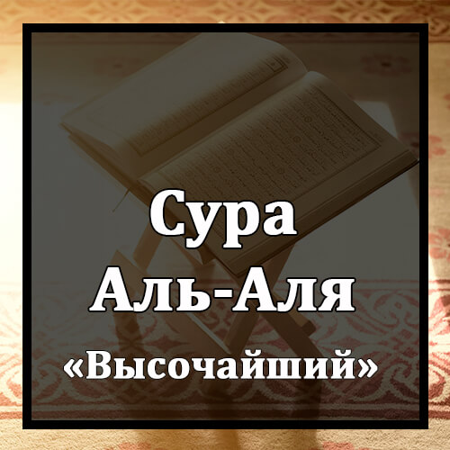

Бисмилляхир-Рахманир-Рахиим
Во имя Аллаха Милостивого и Милосердного!
Саббихисма Раббикаль-`А`ля.
Славь имя Господа твоего Всевышнего,
Аль-Лязи Халяка Фасаууаа.
Который сотворил все сущее и всему придал соразмерность,
Уаль-Лязи Каддара Фахадаа.
Который предопределил судьбу творений и указал путь,
Уаль-Лязи Ахраджаль-Мар`аа.
Который взрастил пастбища,
Фаджа`аляху Гуса`ан Ахуаа.
а потом превратил их в темный сор
Санукри`ука Фаля Тансаа.
Мы позволим тебе прочесть Коран, и ты не забудешь ничего,
Иля Ма Ша`а Аллаху Иннаху Йа`лямуль-Джахра Уа Ма Йахфаа.
кроме того, что пожелает Аллах. Он знает явное и то, что сокрыто.
Уа Нуйассирука Лильйусраа.
Мы облегчим тебе путь к легчайшему.
Фазаккир Ин Нафа`атиз-Зикраа.
Наставляй же людей, если напоминание принесет пользу.
Сайаззаккару Ман Йахшаа.
Воспримет его тот, кто страшится,
Уа Йатаджаннабухаль-Ашкаа.
и отвернется от него самый несчастный,
Аль-Лязи Йаслян-Нараль-Кубраа.
который войдет в Огонь величайший.
Сумма Ля Йамуту Фиха Уа Ля Йахйаа.
Не умрет он там и не будет жить.
Кад Афляха Ман Тазаккаа.
Преуспел тот, кто очистился,
Уа Закарасма Раббихи Фасалля.
поминал имя своего Господа и совершал намаз.
Баль Ту`сируналь-Хайаатад-Дунья.
Но нет! Вы отдаете предпочтение мирской жизни,
Уаль-Ахирату Хайрун Уа Абкаа.
хотя Последняя жизнь - лучше и дольше.
Инна Хаза Ляфис-Сухуфиль-Уля.
Воистину, это записано в первых свитках -
Сухуфи Ибрахима Уа Мусаа.
свитках Ибрахима (Авраама) и Мусы (Моисея).